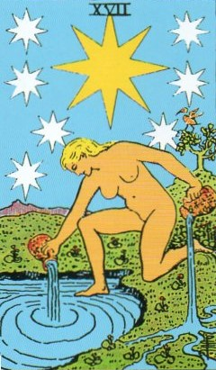
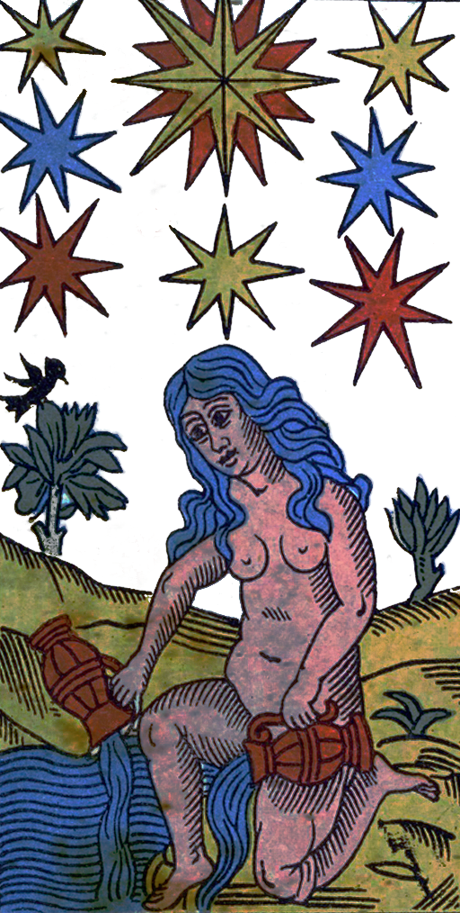
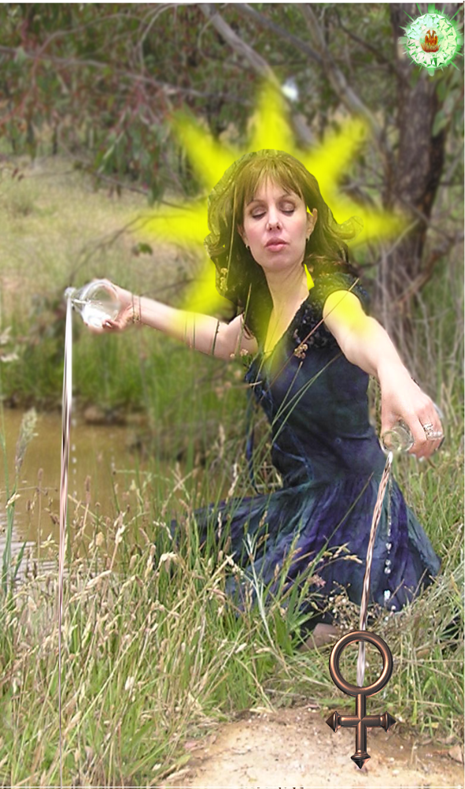
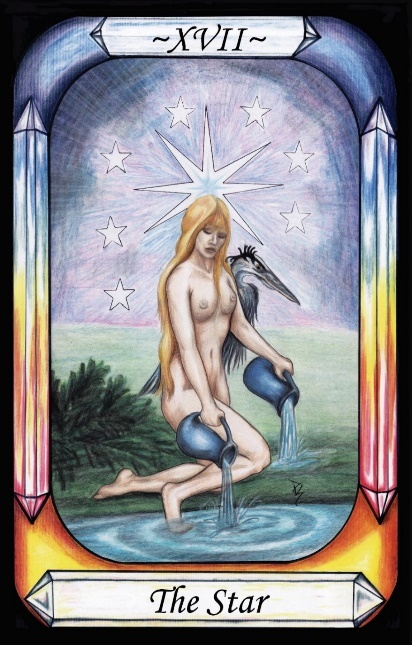
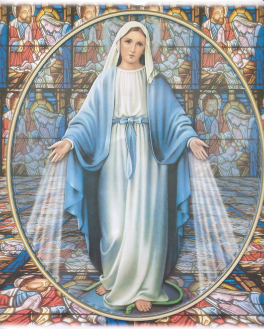

The Star




Representation |
Virgin Goddesses, Esp. Astarte and Inanna. All are mapped to virginal, non-sexualised Venus. |
Meaning |
A representation of various virginal Goddesses, pouring out their love on the land and Water. |
Opposite card |
|
Function |
The Star ss Astraea representing a non-sexual or virginal version of Venus
[P63] To Venus, concupiscence. [The Star, Astraea, Inanna, Virgo] (Netzach)
RWS Imagery
A naked woman pours Water from two vessels into a pool and onto land. A tree and bird can be seen in the background. Eight stars appear in the sky with the large yellow one being eight-pointed.
Interpretation of RWS Imagery
The traditional nudity of the character may be a reference to her innocence, in that it is only with the onset of lust that clothing becomes significant. It may also be a reference to Inanna, who is often represented nude.
Mary the virgin mother of Jesus is also indicated here, with the pouring of waters indicating the pouring out of grace from her hands.

Figure 24 - The Virgin Mary,
with grace/love flowing from her hands.
Yet another link seems to be the Masonic Flaming or Blazing Star, as the Star that led the three wise men to Mary and the birth of Jesus.
Pymander Interpretation
Both Astarte and Astraea seem to be represented here. The trail of discovery starts with Astarte, as represented by the eight-rayed Star, which is Spica in the constellation of Virgo, which is the ascended form of Astraea. The eight rayed yellow Star is Spica, the brightest Star in the Virgo constellation, traditionally representative of various virgin goddess forms, including Isis, Diana and Demeter, and these in turn are commonly related to Aphrodite and Venus. Astraea is associated with the Virgo constellation itself, which appears to be partially represented by the eight stars on the Waite-Smith card, as ‘the constellation containing Spica’, which is Virgo.
While primarily associated with her role in Justice, Astraea is also noted to have been a virgin Goddess. Thus, she may be seen as representing a non-sexual version of Venus, one who has given back concupiscence to Venus has part of her ascent.
The scene itself, including nudity, is still one of innocence, without the artifice of clothing.
Discussion
Astraea was a Greek virgin-goddess of Justice, innocence, purity and precision. She became disgusted by the behaviour of mankind, and abandoned us during the iron age. She ascended to the heavens to become the primary Star in the constellation of Virgo. Her scales became the constellation of Libra.
In the Tarot, she seems to have been selected for her virginity, rather than her Justice, as a counterpoint to the lustfulness associated with Venus. The role of Justice itself is represented in the Justice Card, leaving the Star to be the virgin.
Wicca confirms this interpretation in a description of the Star-Goddess, on page 20 of the tradition’s Alexandrian Book of Shadows (BOS). Similarities include nudity, name, and “love being poured out upon the Earth”. The interesting part of this is the provenance of both Wicca and Tarot. Wicca was largely taken from Leland’s Aradia: Gospel of the Witches, which is claimed to have been obtained from an Italian BOS from the Italian witchcraft tradition which has been modernised as Stregheria. The BOS mentions historical issues that seem related to Third Punic war, from 100 BCE in and around Rome, at the time of Spartacus and the explosion of Mount Vesuvius. The Tarot was created in Renaissance Italy, and includes references to the Pymander, discovered in 1400s AD, written in Arabic in about the 300s CE, according to linguistic analysis.
It is clear that Christianity, Greco-Roman mythology, the writer of the Pymander, the Italian witches, and the designers of the Tarot majors, all shared awareness of the same goddess-form that is seen in the Star card, over a period of possibly 1600 years, and another 400 years to this book. In her Inanna form, she has history back to Uruk (4000 BCE – 3100 BCE), where she was associated with the Lion, which begs the question of the relationship between this Star goddess, and Rhea/Ops from the Greco-Roman mythologies, and represented as Strength in the Tarot.